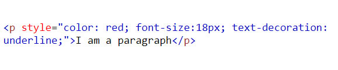
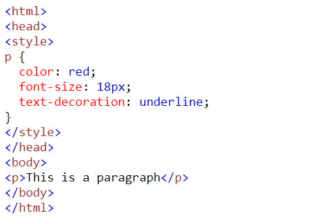
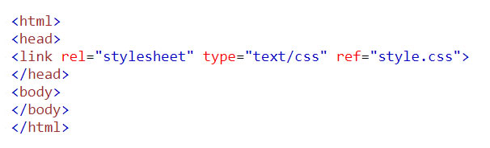

Inline CSS is used to style a specific HTML element. For this CSS style, you’ll need to add the style attribute to each HTML tag. This CSS type is not really recommended, as each HTML tag needs to be styled individually. Managing your website may become too hard if you only use inline CSS. However, inline CSS in HTML can be useful in some situations. For example, in cases where you don’t have access to CSS files or need to apply styles for a single element only.
Internal or embedded CSS requires you to add a <style> tag in the <head> section of your HTML document. This CSS style is an effective method of styling a single page. However, using this style for multiple pages is time-consuming as you need to put CSS rules on every page of your website.
With external CSS, you’ll link your web pages to an external .css file, which can be created by any text editor in your device (e.g. Notepad). This CSS type is a more efficient method, especially for styling a large website. By editing one .css file, you can change your entire site at once.
